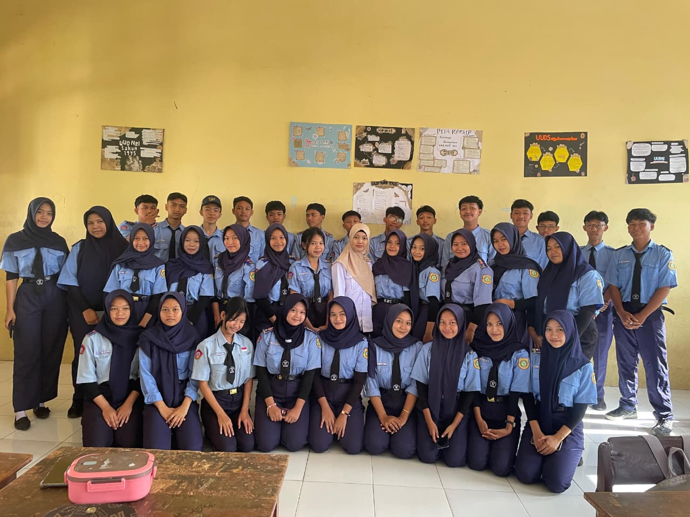

Our Family
From strangers to family. From companions to memories.
The Official Web Of Vocsten XI TKJ 4 Students.
Scroll down slowly

A single place to preserve the various stories and moments of XI TKJ 4—from class activities, group photos, and assignments to the random incidents that might seem ordinary to us right now. Who knows? After we graduate, this page might just become the place where we look back on our time in this class.
From strangers to family. From companions to memories.